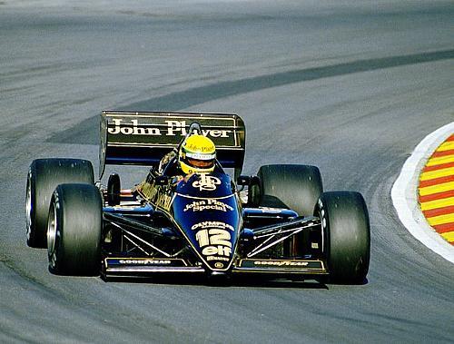
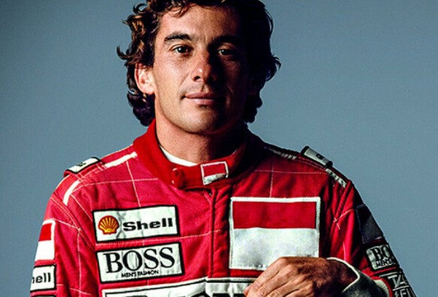
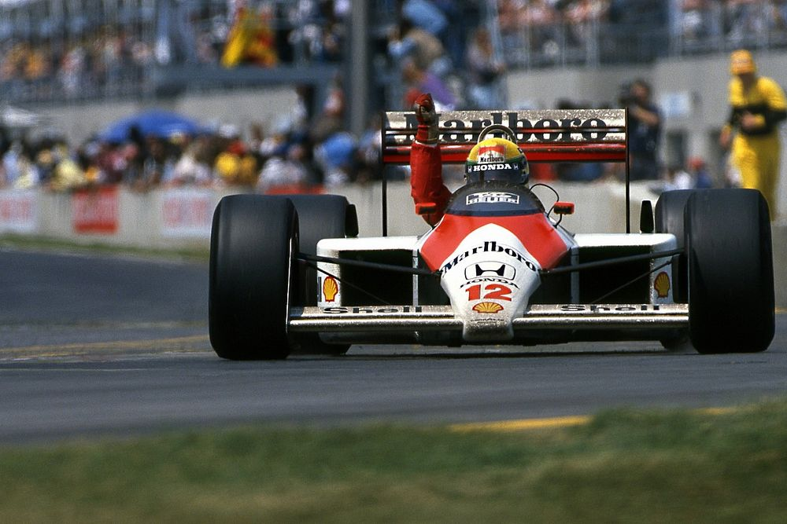
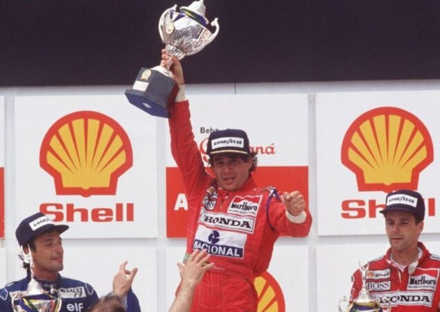
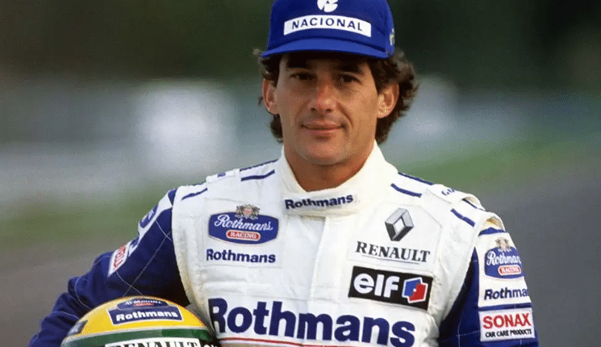
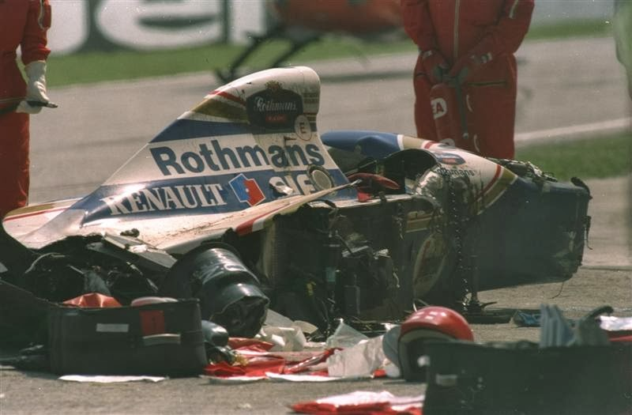

INFANCIA E JUVENTUDE
Filho do empresário Milton Guirado Theodoro Da Silva e de Neyde Joanna Senna Da Silva, Ayrton Senna nasceu em 21 de março de 1960. Foi incentivado pelo pai, um entusiasta das competições automobilísticas,

que montou o primeiro kart de Senna quando este tinha quatro anos, aos nove anos, já conduzia jipes pelas estradas dentro das propriedades rurais de Milton. Na televisão, gostava de assistir o anime Speed Racer, sobre um piloto de corridas.
INÍCIO NO KART
Começou a competir oficialmente nas provas de kart aos treze anos. A sua primeira vitória oficial aconteceu na primeira prova oficial no kart de que participou, em julho de 1973. Em 1977 ganhou o seu primeiro "Campeonato Sul-Americano de Kart", repetindo o feito em 1980. A conquista do seu primeiro título de campeão brasileiro de kart ocorreu em 16 de julho de 1978 no Kartódromo de Tarumã, em Viamão, na Grande Porto Alegre. Ayrton, com 18 anos na época, competiu pela equipe "Sulam" e venceu todas as provas, derrotando assim o seu maior rival Walter Travaglini.

No mundial de kart realizado em 1979 em Estoril, Ayrton usou pela primeira vez o capacete amarelo que se tornou sua marca registrada nas pistas. A pintura foi feita por Sid Mosca. No entanto, como cada país tinha sua própria pintura, todos os competidores do Brasil usaram o mesmo layout. Em 1981, começou a competir na Europa, ganhando o campeonato inglês de Fórmula Ford 1600 (12 vitórias em 20 corridas), pela equipe de Ralf Firman. Em 1982, foi campeão europeu e britânico de Fórmula Ford 2000 (22 vitórias em 27 corridas), pela equipe de Dennis Rushen. Deste campeonato, destaca-se a histórica vitória no Circuito de Snetterton (Inglaterra), quando Ayrton correu a prova inteira com problemas nos freios dianteiros.
CARREIRA NA FÓRMULA 1
1984: Toleman
Senna marcou seu primeiro ponto no campeonato mundial de pilotos logo no segundo grande prêmio que disputou, em Kyalami na África do Sul. Ele repetiu o resultado duas semanas depois, no Grande Prêmio da Bélgica, disputado no circuito de Zolder. Uma semana antes do GP de Mônaco de 1984, ele participou do evento promocional Corrida dos Campeões de Nurburgring, ao lado de ex-campeões da F-1, como Sir Stirling Moss, Jack Brabham, John Surtees, Phil Hill, Niki Lauda e o futuro campeão Alain Prost. Todos correram com o mesmo carro de rua - um Mercedes 190 E 2,3 - 16 - e Senna chegou em primeiro, logo à frente de Niki Lauda.
No GP de Mônaco, seu desempenho trouxe-lhe todas as atenções das demais equipes. Classificou-se em 13º no grid de largada, e fez um rápido progresso através das estreitas ruas de Monte Carlo. Na volta 19, passou Niki Lauda, que estava em segundo, e começou a ameaçar o líder Alain Prost, e continuou por várias voltas lutando pelo primeiro lugar com seu limitado Toleman. A esta altura já chovia muito no circuito e a corrida foi interrompida na volta 31 por razões de segurança. Senna chegou a comemorar a vitória ultrapassando Alain Prost a poucos metros da linha de chegada, mas, nesses casos, o regulamento mandava considerar as colocações da volta anterior.
1985-1987: Lotus
Senna largou em quarto na sua primeira corrida pela nova equipe na abertura da temporada no Brasil, no circuito de Jacarepaguá, no Rio de Janeiro, mas abandonou a prova devido a problemas elétricos. Na segunda corrida do ano, o GP de Portugal, disputado no Autódromo do Estoril, em 21 de abril de 1985, conseguiu sua primeira vitória na Fórmula 1, largando na pole position sob pesada chuva. Alain Prost, em segundo, abandonou depois de bater no muro. Senna terminou a temporada em 4º lugar no Campeonato Mundial de Pilotos com 38 pontos e seis pódios (duas vitórias, dois segundos e dois terceiros lugares), além de sete pole positions.[26] Devido ao seu desempenho, foi eleito o mais popular e o melhor piloto da temporada segundo a revista Autosprint.
A nova Lotus 98T mostrou ser mais confiável em 1986 e a temporada começou bem para Senna, que terminou em segundo na corrida vencida pelo também brasileiro Nelson Piquet, no GP do Brasil em Jacarepaguá. Reconhecendo estar com um carro inferior aos da Williams e McLaren, Senna passou a adotar uma estratégia de não parar para trocar pneus, buscando ficar na frente dos adversários o maior tempo possível. Com essa tática, ele passou a liderar o campeonato pela primeira vez na carreira, depois de vencer o GP da Espanha, em Jerez de la Frontera, no qual bateu a Williams de Nigel Mansell por 0,014s - uma das menores diferenças de chegada da história da F1. Todavia, a liderança do campeonato não foi mantida por muito tempo, já que Senna abandonou diversas outras corridas por problemas mecânicos. A caça ao primeiro título mundial acabou sendo uma luta entre Prost e sua McLaren-TAG e a dupla Piquet e Mansell da Williams-Honda, Senna se tornaria definitivamente um ídolo no Brasil ao conquistar sua segunda vitória na temporada no GP dos Estados Unidos, disputado em Detroit, e terminou o campeonato novamente na quarta colocação, com 55 pontos, oito poles e seis pódios.
1988-1993: McLaren
Em 1988, as McLaren-Honda ostentavam os números 11 e 12, desta vez com a dupla Alain Prost e Ayrton Senna. Um dos principais momentos da temporada de 1988 aconteceu em Mônaco. Durante os treinos oficiais, Ayrton fez a pole position com uma vantagem de 1:427 para Alain Prost. Na corrida, Ayrton liderava com uma margem de quase 1 minuto para o segundo colocado, o francês Alain Prost. No entanto, o tricampeão mundial acabou batendo na 66ª volta, dando a vitória ao adversário francês. O GP do Japão, Senna, que largava na pole, não conseguiu largar e caiu para 17ª posição. Entretanto, já nas primeiras voltas, Ayrton ultrapassou oito adversários. Na 28ª volta, Senna ultrapassou Prost e terminou ao final da prova com 13 segundos de vantagem para o francês, conquistando o título. No GP de Mônaco de 1989, Ayrton novamente abriu uma vantagem sobre o francês acima de 50 segundos, alcançando a vitória desta vez. Senna disse, logo após a prova, que seu carro tinha perdido as duas primeiras marchas e, por conta disso, precisou mudar sua forma de pilotagem.
conquistou o tricampeonato em 1989, depois de uma colisão com Senna durante o GP do Japão, em Suzuka, penúltima corrida da temporada, e que Senna precisava vencer para ter chances de conquistar o campeonato mundial na última etapa. Senna tentou ultrapassar Prost na chicane, os dois "tocaram" os pneus e foram para fora da pista com os carros entrelaçado. Em 1990, no mesmo circuito e com os dois pilotos novamente disputando o título mundial, Senna tirou a pole de Prost. A Ferrari de Prost fez uma largada melhor e pulou à frente da McLaren de Senna, que antes mesmo da largada havia declarado que não permitiria uma ultrapassagem de Prost.
primeira curva, Senna tocou a roda traseira de sua McLaren na Ferrari de Alain Prost a 270 km/h, levando os dois carros para fora da pista. Ao contrário do ano anterior, desta vez o abandono dos pilotos deu a Senna o seu segundo título mundial. Neste ano, Senna conquistou o título mesmo com um equipamento inferior ao da Ferrari, notadamente a partir do meio da temporada, A temporada de 1990 reservou um momento inusitado na história da Fórmula 1. Em setembro daquele ano, durante o GP de Monza, na Itália, Senna fez uma aposta com o chefe de equipe Ron Dennis. O chefe da McLaren não acreditava na vitória de Ayrton dentro da casa da Ferrari. O brasileiro decidiu propor uma aposta com Ron: caso conseguisse a vitória, ele ganharia o carro do triunfo de presente. Além de ter vencido a corrida, Senna fez a pole position, marcou a volta mais rápida da prova e liderou de ponta a ponta
GP Brasil 1991
GP Brasil de 1991 marcou a primeira vitória de Ayrton Senna em sua terra natal pilotando um Fórmula 1. Aliado a isso, o fato de a corrida ter possuído um final dramático, com a perda de quase todas as marchas de sua McLaren e o consequente desgaste físico acima do normal, fazendo com que ele não conseguisse sair do carro sozinho, fez dessa corrida uma das mais lembradas da carreira do piloto brasileiro. Logo após a bandeirada final, a comunicação de rádio da equipe foi aberta na TV, no exato momento em que Ayrton gritava, em parte pela vitória inédita como também pelas dores que sentia devido ao desgaste da corrida. Ainda na pista, em seguida à conquista inédita de Senna, os fiscais de pista comemoravam a vitória do brasileiro com pulos e abraços.
1991, depois de conquistar seu terceiro título mundial, mesmo com um equipamento inferior em relação à Williams, Senna explicou à imprensa o que acontecera no ano anterior em Suzuka. Tinha como prioridade conseguir a pole, pois havia recebido informações seguras de que esta mudaria de lado, passando para a esquerda, o lado limpo da pista, somente para descobrir que essa decisão havia sido revertida por Balestre depois que ele conquistara a pole. Ao explicar a colisão com Alain Prost, Ayrton Senna disse que queria deixar claro que ele nunca iria aceitar as decisões injustas de Balestre, incluindo a sua desclassificação em 1989 e a pole de 1990.
1994: Williams
Senna já havia tentado entrar para a Williams em 1993, mas foi impedido por Prost, que vetou seu nome. Ayrton Senna se ofereceu para pilotar por nada, pois seu desejo era fazer parte da vencedora equipe Williams-Renault, mas foi impedido por uma cláusula no contrato do francês que impedia o brasileiro de entrar para a equipe, porém, essa cláusula não se estenderia até 1994, o que fez Prost se retirar das corridas um ano antes de vencer seu contrato, preferindo isso a ter seu principal rival como companheiro de equipe. Em 1994, Senna finalmente assinou com a equipe Williams-Renault.
A primeira corrida da temporada 1994 foi no Brasil, disputada em Interlagos, quando Senna fez a pole. Na corrida, Senna assumiu a ponta, mas Michael Schumacher com a Benetton tomou a liderança depois de passar Ayrton Senna nos boxes na volta 21. Senna, determinado a vencer no Brasil, perdeu o controle de sua Williams, rodou na curva da Junção, ficando parado na zebra e abandonando a prova na volta 55.
MORTE
Ao participar da terceira corrida da temporada, o GP de San Marino,no Circuito de Ímola, Senna rapidamente fez a terceira melhor volta da corrida, seguido por Michael Schumacher. Senna iniciara o que seria a sua última volta na F1; ele entrou na curva Tamburello e perdeu o controle do carro devido a uma barra de direção quebrada, seguindo reto e chocando-se violentamente contra o muro de concreto. A telemetria mostrou que Senna, ao notar o descontrole do carro, ainda conseguiu, nessa fração de segundo, reduzir a velocidade de cerca de 300 km/h (195 mph) para cerca de 200 km/h (135 mph).
Os oficiais de pista chegaram à cena do acidente e, ao perceber a gravidade, só puderam esperar a equipe médica. Por um momento a cabeça de Senna se mexeu levemente, e o mundo, que assistia pela TV, imaginou que ele estivesse bem, mas esse movimento havia sido causado por um profundo dano cerebral. Senna foi removido de seu carro pelo Professor Sid Watkins, neurocirurgião de renome mundial pertencente aos quadros da Comissão Médica e de Segurança da Fórmula 1 e chefe da equipe médica da corrida, e recebeu os primeiros socorros ainda na pista, ao lado de seu carro destruído, antes de ser levado de helicóptero para o Hospital Maggiore de Bolonha onde, poucas horas depois, foi declarado morto. A morte do piloto foi considerada pelos brasileiros como uma tragédia nacional e o governo brasileiro declarou três dias de luto oficial.[85] O governo brasileiro também lhe concedeu honras de chefe de Estado, com a característica salva de tiros. Entre o cortejo do caixão com o corpo do piloto desde o Aeroporto de Guarulhos até a Assembleia Legislativa,
o velório, que durou aproximadamente 24 horas, e o cortejo final desde a Assembleia até o Cemitério do Morumbi, aproximadamente dois milhões de pessoas estiveram presentes.